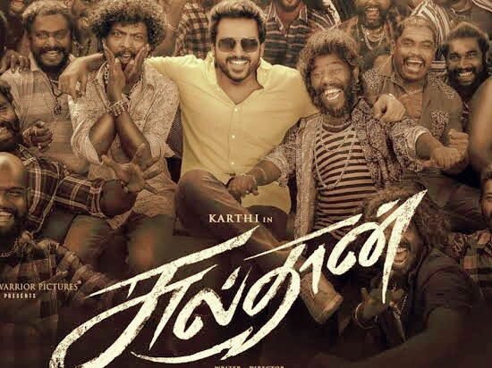

SULTHAN
Bakkiyaraj Kannan's Sulatan is a Tamil film written and directed by him, starring Karthi Sivakumar, Rashmika Mandanna, Lal, Yogi Babu, Napolean, Ramachandra Raju, and others.
This film is about Vikram aka Sultan, who grew up with 100 brothers who were goons. Due to unforeseen circumstances, he was forced to undertake a mission in order to save his brothers.
The film begins with a flashback scene establishing the roles of Naplolean, Lal, and Sultan's brothers. And Sultan will be born at midnight in heavy rain on that day. Bakkiyaraj Kannan's treatment of Sultan was excellent. Apart from other mass masala commercial films, what I liked about this one is that, despite the fact that there are 100s of goons, they will not have any action scenes in any of the frames for them. There will be emotional and comedic scenes for these 100 people, but they will not be involved in any of the fights scenes up to the climax. That's what piqued my interest. Also, because said hero Sultan is on a mission, the film necessitates this type of treatment.
"Remo" , Bakkiyaraj Kannan's first film, was his previous work. His heroines in both films are elegant, whether they are city or village girls. Sultan is a complete entertainer thanks to his direction. I liked how he used his hero. Toward the end of the film, the hero takes an oath in front of the village peoples, allowing the director to convey the power of his hero through that scene. Also, his life and perspective on his brothers' actions change in two stages of the film, the first from the hospital after the shootout in the first half and the second from the hospital after the shootout in the second half during the intermission scene His hands will be covered in blood in both of these scenes. In the first scene, he will be a witness, while in the second, he will be the perpetrator. After the first scene, he begins his mission, and after the second scene, his attitude towards his brother's actions shifts. There is also a dialogue which justifies it in the second half.
Everyone in this film had a chance to shine, especially Karthi, Rashmika, and the 100 goons. Karthi played Shiva in his 2010 Tamil film "Paiyaa" . Nonetheless, he had the same screen presence and performance. His performance in the film is more important. Rashmika was also effective as the village girl. Lal as Manzoor was fantastic, especially in some of the emotional scenes. Also, the artists who played Sultan's brothers did a good job. In most films, goons will be used for action scenes, and they will play a larger role in these scenes. However, in this case, they play a larger role in comedy, emotional, and other scenes. They also have a limited amount of time for action scenes, only a few minutes. Finally, despite his limited screen presence, the villain Ramachandra Raju was lit. He was as lit as he was in KGF, especially during the climax scene.
Cinematography by Sathyan Sooryan was amazing. Because in most of the frames those 100 goons will be there. His frames from the song "Jai Sultan" were lit up, especially near the end. Also in the song "Puthu Satham". Finally, in the climax, I felt Sultan's rage through his frames.
.png) Yuvan Shankar Raja's score improved the film's entertainment value. Vivek-Mervin's songs were also enjoyable. "Jai Sultan" in particular, was a perfect treate. It was a real banger af. "Puthu Satham" and "Yaareyum Ivlo Azhaga Paakale" were also enjoyable.
Yuvan Shankar Raja's score improved the film's entertainment value. Vivek-Mervin's songs were also enjoyable. "Jai Sultan" in particular, was a perfect treate. It was a real banger af. "Puthu Satham" and "Yaareyum Ivlo Azhaga Paakale" were also enjoyable. Karthi's screen presence, as well as his performances, were highlights for me in this film. The music, OST, and cinematography were all excellent. Apart from that, I admired Bakkiyaraj Kannan's writing process. Sultan, the protagonist in this film, does not have a close relationship with his father. He respects and loves him, but there is a gulf between them that is evident in the majority of their combined scenes. He does, however, have a close relationship with his brothers. He had grown up with them. There is also an emotional scene that supports this. Another point to consider is that in most mass masala commercial films, the protagonist is given more dominance and power than everyone else in the film. As a result, by the film's climax, he will be the person who manages to save everyone, and there will also be an unwelcome build up for that character. But it was completely different here; obviously, there are more exaggeration scenes for the hero, but at the climax, the hero's complete dominance and power will be transferred to his 100 brothers. That idea appealed to me. In addition, rather than the cliche agriculture concept seen in commercial films, I believe the situation here is entirely different, because the protagonist has a mission to complete, and in the middle of that process, he encounters this agriculture issue, which becomes a subplot of the film.
In addition, there are several elements in this film that I dislike. As previously stated, I could see the protagonist exaggerating. I'm not sure if the script requires it, but I'm not convinced. Also, I'm not sure why the heroine fell for the hero, whether it was because of his bravery or fighting abilities, or because he stood up for her village. I'm not sure what the reason is. But I'm not sold on that line. Again, there is a scene in the film where Sultan fights his own brother and wins. Because that scene demands it, but I couldn't accept it because Sultan isn't a rowdy, even though he defeated his gymnastic brother.